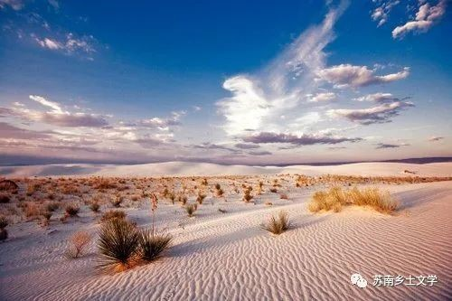

《白沙》
苏童
通过一行人的出行来反映景观下的乡村建设以及相关治理不当的问题存在所导致的乡村环境的破坏。在这种环境和景观下，一行人产生了思考，并感受到了心灵精神层面的迷茫与迷失。
乡村风貌
1.景观化的乡村
金寨也不是真正的处女地了。很多原先是自然风光或是人文风景的地方在一些旅游开发之下变得面目全非。
汽车就把他们拉到那些地方去，那些所谓的旅游胜地总是让人倒尽胃口，每一粒沙子都沾有痰迹和细菌，浴场的海。
那些缺乏品味的旅游者一批批地到海滨车站，就像一批批货物一样被卸下来，汇集到海滩上的人群中，你可以想象。
2.环境污染破坏
他们顺老毕手指的方向极目四望，果然看见了一座彩色的帐篷，帐篷好像是用许多布块缀补而成的，上面零乱地涂写着一行字。我认为那是一顶哗众取宠的帐篷。
水里飘满了塑料垃圾，岸上饭馆的菜肴又贵又难吃，人们总是一边诅咒着一边留恋着这样的地方，夏天有多长前往海滨的人流。
他们和先期到达的人是怎样堆在一起，争夺那些污秽的海水，沙滩和空气的。
3.自然风景带给这一群人的心灵体验
他们静静地坐在海滩上观望那个传奇人物走向大海，因为寂静，海浪的声音就像天界万圣咏唱的弥撤;
因为寂静，他们听见了月光落在海面上的溅击之声;因为寂静，他们听见豆豆用沙哑而柔美的音色唱起一支陌生的歌谣，他们知道那是雪莱在以前的流浪途中自弹自唱的歌谣;
因为寂静，他们能分辨雪莱左腿和右腿趟过海水的声音的落差，夜色暗蓝，远处的灯塔之光在他们看来仿佛来自另一个世界，他们看见黑绸似的海水一点点地浸蚀了入海者的白袍;
感悟心得
《白沙》可以看作是一杯俗世与诗境碰撞的白水。人间为俗充斥，如若诗文的理想主义者雪莱游于其外，用海葬写下终章。
作者觉得这个世界已经被污染了，想要寻找纯真，但又十分失望。比如，一开始的人满为患的海滩和金寨的纯洁形成对比，小林他们庸俗的嘴脸和雪莱形成对比，老毕一开始挡住学生们的镜头，与他自己后来默默拍照形成对比。
静静的海滩，远处的灯塔，目之所及却是一片杂乱与荒芜。正是在这样的环境和背景之下，一行人所感受到的心灵的迷茫，也是作者想要呈现给读者的东西。
我们在反思白沙失败开发现象的同时，也注意到了乡村的治理建设的重要性。如何进行合理的规划和开发以至在原有乡村景观和现代“景观化”乡村达成一个平衡，是我们要思考的问题。